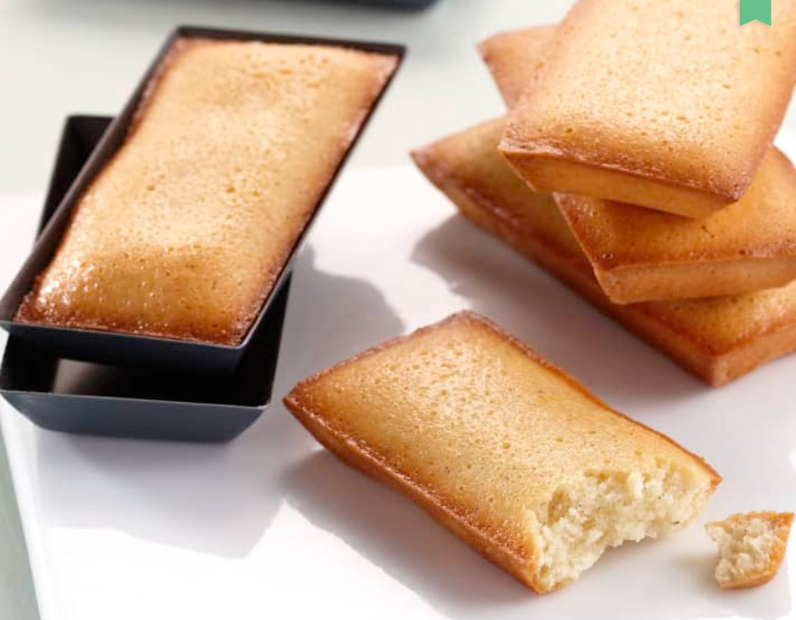

Financiers
Ingredients
20×
- 100 g d'amandes émondées
- 150 g de beurre
- 50 g de farine
- 170 g de sucre glace
- 1 gousse de vanille
- 150 g de blancs d'œufs

Préparation
Étape 1
Préchauffer le four à 180ºC. Beurrer des moules à financiers.
Étape 2
Mixer 100 g d'amandes émondées 10 sec/vitesse 9. Réserver.
Étape 3
Fondre 150 g de beurre 3 min/90ºC/vitesse 1. Réserver et nettoyer le bol.
Étape 4
Avec le fouet, mettre 50 g de farine, 170 g de sucre glace, la poudre d’amande et les graines d’1 gousse de vanille. Mélanger 10 sec/vitesse 2.
Étape 5
Ajouter 150 g de blancs d'œufs (5) et fouetter 1 min/vitesse 3. Ajouter le beurre fondu et fouetter de nouveau 1 min/vitesse 3.
Étape 6
Répartir dans les moules et cuire 20min à 180ºC, jusqu’à ce qu’ils soient bien dorés.